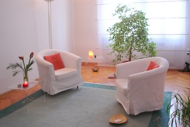

Ansprechen möchte ich Menschen mit Interesse an ihrer persönlichen Entwicklung und innerem Wachstum, Menschen in Krisensituationen, z.B. aufgrund von Trennungserfahrungen wie sie etwa im Zusammenhang mit persönlichen Verlusten oder Krankheit in den Vordergrund treten, sowie Menschen, die sich in inneren oder äußeren Konfliktsituationen befinden, welche zu vielfältigem Leidensdruck oder gar zum Verlust der Lebensfreude insgesamt führen.
Mit erweiterten Gestaltmethoden und Übungen lade ich Sie ein, sich dem seelischen und körperlichen Erleben zuzuwenden. Dies geschieht in einer Atmosphäre, in der sich Freude am sowie Neugier und Mut zum Selbsterforschen und Experimentieren immer weiter entwickeln können. Im Spüren, Fühlen und Wahrnehmen der momentanen Phänomene kann so die Fähigkeit zum Hinschauen und Annehmen dessen was ist wachsen. Dies ist nach meiner Erfahrung eine wichtige Voraussetzung für jede Veränderung in eine gewünschte Richtung.
Für diesen Prozess verstehe ich die Prinzipien der Gestalttherapie und Sensory Awareness als bedeutende Grundpfeiler. Das heißt, mit der Übung von Präsenz und der damit verbundenen erweiterten Wahrnehmung kann sich die Kraft, die uns im innersten Wesen schon immer getragen hat, zeigen, erneuern und entfalten. Und aus dieser inneren Unterstützung heraus kann dann das Vertrauen für den nächsten Schritt entstehen.